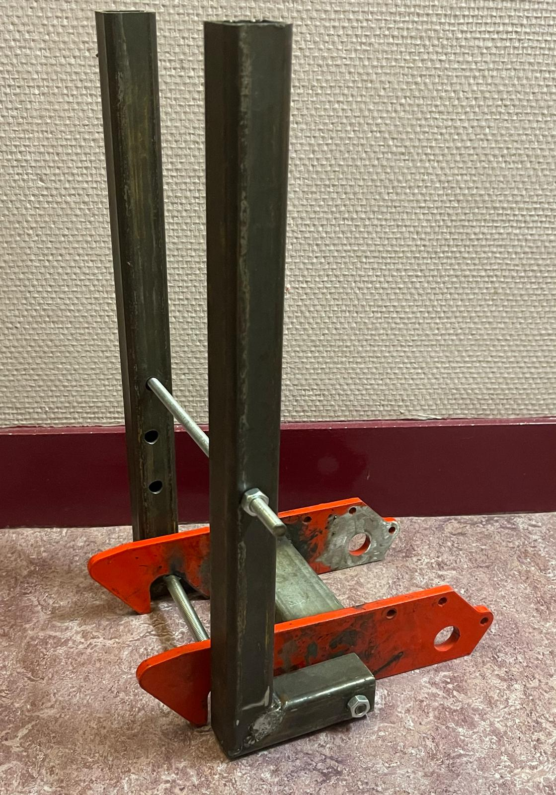
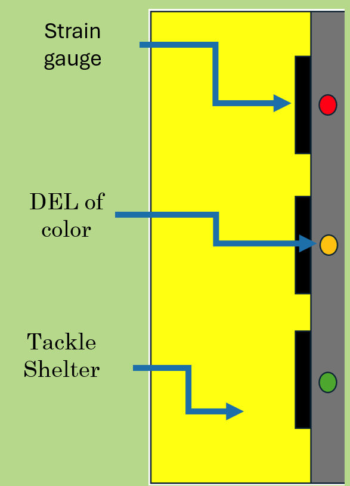
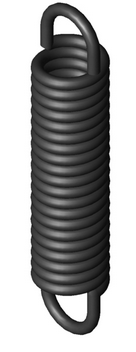
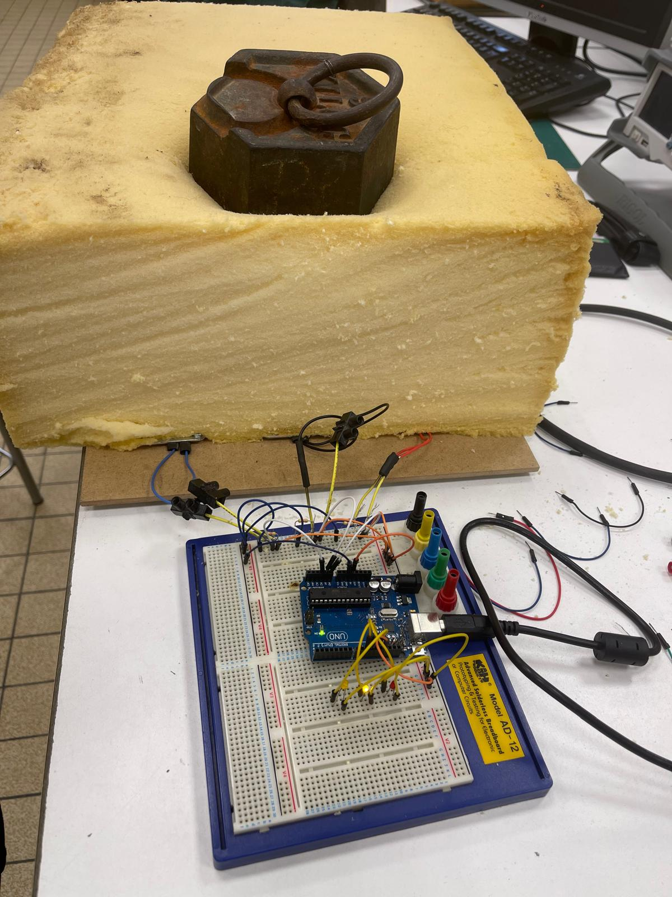
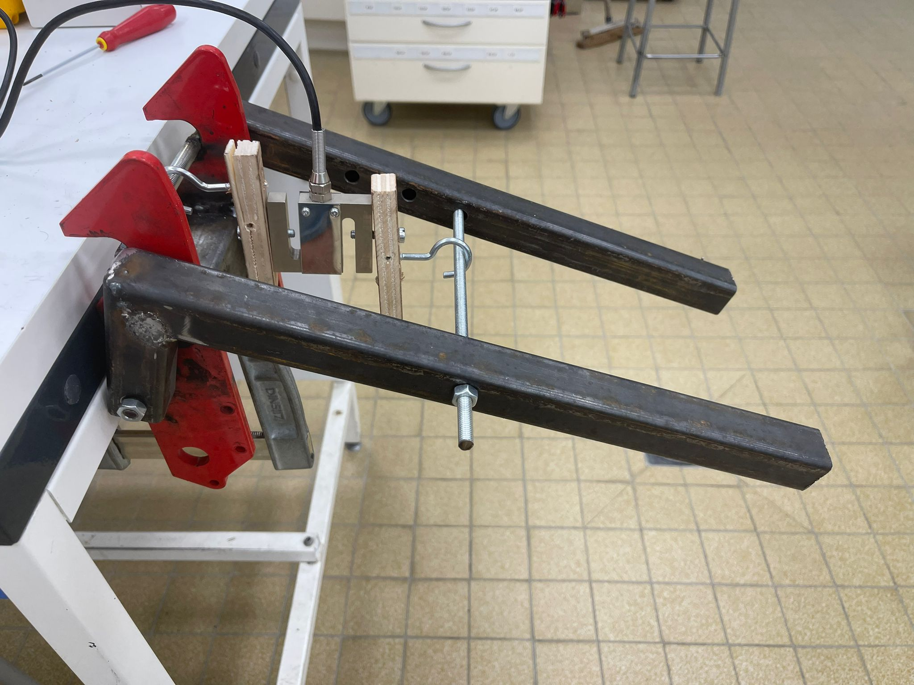

Study and design of a rugby tackle device (50 hrs)
This project was duo project for nationwide entrance examination to Grandes Ecoles (graduate schools). My friend and I, both devoted rugby men, were worried about our sport’s future and more precisely about lacks of players security during tackles which could lead to irreversible nervous system damage or even death.

In fact, 74% of the concussions are linked with the tackle phase. In this situation, we decided to engineer a prototype of a tackle shelter, used in the trainings, that could tell if the tackle was too high or not thanks to the survey of the impact point.

The 2 main parts of this project were: the electrical part with the sensors linked to the impact point signal treatment and the mechanical part with the spring design. The spring should allow to use the kinetical energy of the player impact to lift back the shelter after the player went off

Electrical part:
Thanks to strength sensors under the foam of the shelter we managed to get the impact point of the player, then we compared where the contact was made and then a LED (red, yellow or green) turned on to give the height information to the tackler. We tested two main sensors: deformable strain gauge with on-off signal and tension proportional to the impact and piezoelectric cells. Finally we decided to keep the strain gauge even if it was more expensive because of the mechanical strength allowed.
Mechanical part:
Thanks to a geometric closure we managed to get the spring length through the position. We also managed to get an interval of the spring stiffness thanks to a derived mechanical energy theorem and a fundamental static principle both applied to the system. With those two features we choose the right spring to feat with the project needs

After those theorical studies we created a 1:3 scale prototype and ran some tests on both electrical and mechanical to verify the theorical results.

Thanks to this project, we managed to design a secured device allowing a better educational approach on the tackle face. Nevertheless, due to lack of time to go further on the project and the different path took by both of us, we did not manage to design the final product or to market it.